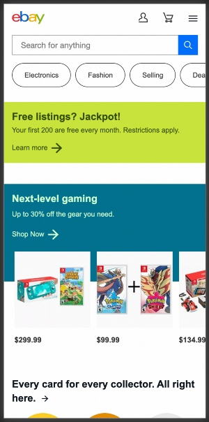
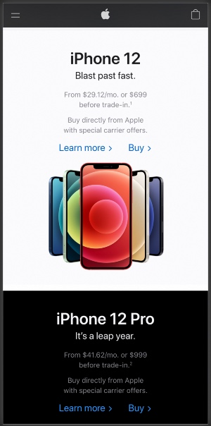

Fitt's Law - eBay
eBay's website uses both horrizonal, vertical scrolling components and many easy to find icons. All of these elements make it easy quickly to browse the site and keep you engaged.
Clean Design - Apple
Apple's design style is unappologetically clean, sparce and includes plenty of white space. It gives a very unencubmbered presentation of the products and services they are marketing.
Contrast - BYUi Website
BYUi's website uses very good contrast. Each content row uses a different color block (over color overlay) to designate each section. This helps compartmentalize the content visually.